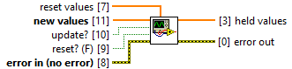
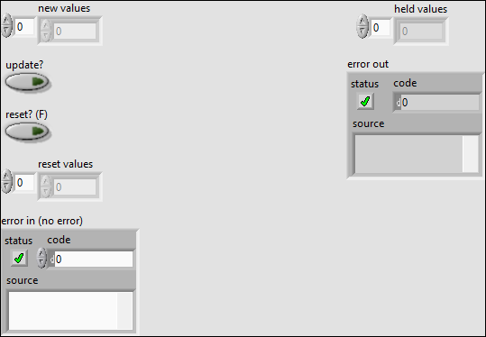
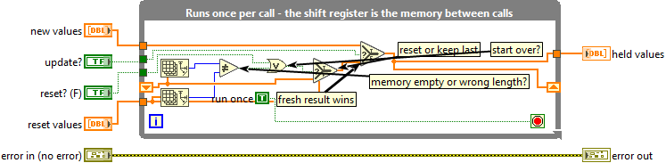

Sample-and-hold for FlexLogger outputs: remembers the last values between Process calls so the plug-in can write every channel on every block.
Why: the S&V order VIs do not deliver a result on every block (the tach needs edges, the order spectrum needs enough revolutions). FlexLogger expects one value per channel per block, so in a block without a new result the previous result is repeated.
Rules, checked in this order on every call:
1. update? TRUE -> held values = new values (a fresh result always wins, also on the reset call).
2. reset? TRUE, or the memory does not have the same length as reset values (first call ever, or the number of channels changed) -> held values = reset values.
3. otherwise -> held values = the values held on the previous call.
How: a While Loop that runs exactly once per call. Its shift register is left uninitialized, so it keeps its value from one call to the next - that is the memory.
IMPORTANT: this VI must stay PREALLOCATED CLONE REENTRANT. Every place it is called (RPM, order amplitudes, every plug-in channel instance) then gets its own memory. As non-reentrant or shared clones, two callers would overwrite each other's values.


